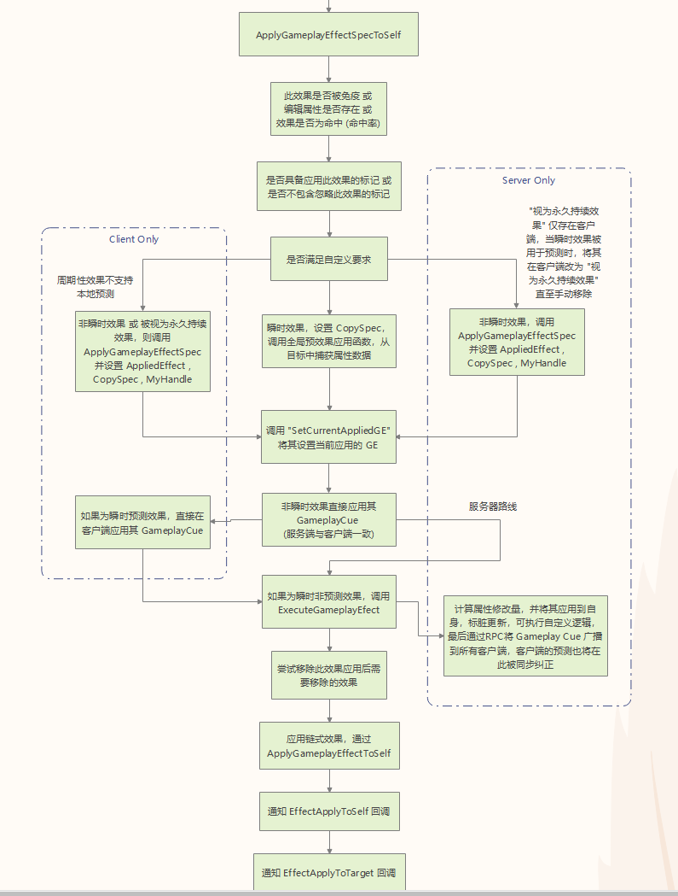
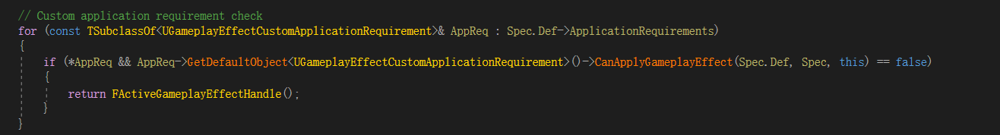

# Unreal GAS 源码解析简介：GAS，全称：Gameplay Ability System，是虚幻引擎内置的一款技能系统插件。此插件为我们提供了角色属性集，技能实例，技能效果，技能特效等，同时支持网络同步，本地预测等。使用此插件，我们可以更专心地设计技能的表现与效果，而不需要关心技能系统的底层实现。但缺点也很明显，因为集成的功能较多，增加了我们学习 / 改造使用此插件的难度和成本。本篇博客将从源码层面对 GAS 的底层实现一探究竟，希望能对你有所帮助～～～
注：本文不讲 GAS 的使用。如有需要，请在下方留言 (不然就不更了，因为不是很难...)
# GAS 总览以下是 "GAS" 简化后的使用基本流程，开发中当然不会这么简单，如：环境判断影响技能释放动作，同时影响效果等复杂情况会非常多。我们只分析源码，上层开发先搁一搁 😃
# Attributes 的实现Attributes 即 角色的属性，如：血量，耐力等。技能系统首先得有可以和技能发生交互的角色属性。而在 GAS 系统中，角色属性就定义在 "AttributeSystemConponent" 的 "DefaultStartingData" 中。代码如下：
UPROPERTY(EditAnywhere, Category="AttributeTest")TArray<FAttributeDefaults> DefaultStartingData;
可以看出，此数组是开放给蓝图编辑的，"FAttributeDefaults" 则是我们需要配置的属性，源码如下：
FAttributeDefaults 1 2 3 4 5 6 7 8 9 10 11 12 13 14 15 16 USTRUCT ()struct GAMEPLAYABILITIES_API FAttributeDefaults { GENERATED_USTRUCT_BODY () FAttributeDefaults () : DefaultStartingTable (nullptr ) { } UPROPERTY (EditAnywhere, Category = "AttributeTest" ) TSubclassOf<UAttributeSet> Attributes; UPROPERTY (EditAnywhere, Category = "AttributeTest" ) UDataTable* DefaultStartingTable; };
"Attributes" 是用户自定义的 "UAttributeSet" 的子类，"DefaultStartingTable" 则是用来获取该 "Attribute" 的初始值的，获取方法需要在自定义的 "UAttributeSet" 中定义。我们先看看在蓝图中编辑的 "Attribute" 是怎么应用到 "AbilitySystemComponent" 中的。
UAbilitySystemComponent.OnRegister 1 2 3 4 5 6 7 8 9 10 11 12 13 14 15 16 17 18 19 20 21 22 void UAbilitySystemComponent::OnRegister () Super::OnRegister (); CacheIsNetSimulated (); for (int32 i=0 ; i < DefaultStartingData.Num (); ++i) { if (DefaultStartingData[i].Attributes && DefaultStartingData[i].DefaultStartingTable) { UAttributeSet* Attributes = const_cast <UAttributeSet*>(GetOrCreateAttributeSubobject (DefaultStartingData[i].Attributes)); Attributes->InitFromMetaDataTable (DefaultStartingData[i].DefaultStartingTable); } } }
"AbilitySystemComponent" 组件会自动为我们初始化所有的默认属性 (蓝图中定义的)，我们只需要重写 "UAttributeSet" 的 InitFromMetaDataTable() ，并提供数值元数据表即可。另外，"DefaultStartingData" 是不支持网络复制的，如果需要网络复制，则需要设置 "SpawnedAttributes" 属性。源码如下：
/** List of attribute sets */ UPROPERTY(Replicated) TArray<UAttributeSet*> SpawnedAttributes;
"SpawnedAttributes" 是不支持蓝图编辑的，我们需要在角色的 "PostInitializeComponents ()" 中为其设置。如：
PostInitializeComponent 1 2 3 4 5 6 7 8 9 10 11 12 13 14 15 16 17 18 19 20 21 22 23 24 25 26 27 28 29 30 31 32 33 34 35 36 37 38 39 40 41 42 43 44 45 46 47 48 49 50 51 52 53 54 void AAbilitySystemTestPawn::PostInitializeComponents () static FProperty *DamageProperty = FindFieldChecked<FProperty>(UAbilitySystemTestAttributeSet::StaticClass (), GET_MEMBER_NAME_CHECKED (UAbilitySystemTestAttributeSet, Damage)); Super::PostInitializeComponents (); AbilitySystemComponent->InitStats (UAbilitySystemTestAttributeSet::StaticClass (), NULL ); } const UAttributeSet* UAbilitySystemComponent::InitStats (TSubclassOf<class UAttributeSet> Attributes, const UDataTable* DataTable) const UAttributeSet* AttributeObj = nullptr ; if (Attributes) { AttributeObj = GetOrCreateAttributeSubobject (Attributes); if (AttributeObj && DataTable) { const_cast <UAttributeSet*>(AttributeObj)->InitFromMetaDataTable (DataTable); } } return AttributeObj; } const UAttributeSet* UAbilitySystemComponent::GetOrCreateAttributeSubobject (TSubclassOf<UAttributeSet> AttributeClass) AActor* OwningActor = GetOwner (); const UAttributeSet* MyAttributes = nullptr ; if (OwningActor && AttributeClass) { MyAttributes = GetAttributeSubobject (AttributeClass); if (!MyAttributes) { UAttributeSet* Attributes = NewObject<UAttributeSet>(OwningActor, AttributeClass); GetSpawnedAttributes_Mutable ().AddUnique (Attributes); MyAttributes = Attributes; bIsNetDirty = true ; } } return MyAttributes; }
这样一来，"AbilitySystemComponent" 中的 "Attributes" 就初始化好了。最后咱再看看 "SpawnedAttributes" 的网络复制：
GetLifetimeRelicateProps 1 2 3 4 5 6 7 8 9 void UAbilitySystemComponent::GetLifetimeReplicatedProps (TArray< FLifetimeProperty > & OutLifetimeProps) const FDoRepLifetimeParams Params; Params.bIsPushBased = true ; DOREPLIFETIME_WITH_PARAMS_FAST (UAbilitySystemComponent, SpawnedAttributes, Params); }
考虑到 "Attributes" 有可能很多，且大多数不战斗的时候是不需要检查是否需要复制的，所以我们使用推送模型来对其进行网络复制 (手动标记为脏后进行网络复制)。
ok，角色的属性咱知道是怎么来的了。接下来看看技能是怎么放出来的 😃
# GameplayAbility"GameplayAbility" 即是 游戏中的技能，技能可能需要冷却，也可能需要消耗法力值等。在 GAS 中，以上内容都已内置，另外还支持客户端本地预测，服务端矫正技能释放。对于技能实体 (火球等)，可以直接使用 CDO，也可以按执行次数实例化，或是按所有者实例化 (每个所有者只有一个技能实体)。最后我们要把这个技能的释放绑定到一个按键上，如鼠标右键等。
现在，假设我们已经按下某个释放技能的按键。我们来看看引擎是怎么处理的。
# 按键处理
AbilityLocalInputPressed 1 2 3 4 5 6 7 8 9 10 11 12 13 14 15 16 17 18 19 20 21 22 23 24 25 26 27 28 29 30 31 32 33 34 35 36 37 38 39 40 41 42 43 44 45 46 47 48 void UAbilitySystemComponent::AbilityLocalInputPressed (int32 InputID) if (IsGenericConfirmInputBound (InputID)) { LocalInputConfirm (); return ; } if (IsGenericCancelInputBound (InputID)) { LocalInputCancel (); return ; } ABILITYLIST_SCOPE_LOCK (); for (FGameplayAbilitySpec& Spec : ActivatableAbilities.Items) { if (Spec.InputID == InputID) { if (Spec.Ability) { Spec.InputPressed = true ; if (Spec.IsActive ()) { if (Spec.Ability->bReplicateInputDirectly && IsOwnerActorAuthoritative () == false ) { ServerSetInputPressed (Spec.Handle); } AbilitySpecInputPressed (Spec); InvokeReplicatedEvent (EAbilityGenericReplicatedEvent::InputPressed, Spec.Handle, Spec.ActivationInfo.GetActivationPredictionKey ()); } else { TryActivateAbility (Spec.Handle); } } } } }
首先，引擎调用之前绑定到 "InputComponent" 的 "AbilityLocalInputPressed" 函数，并将按键作为参数传进去。此函数会先判断本次输入是否被消费 (绑定了 GenericConfirm / Cancel 回调)，如果被消费则调用对应回调并返回。未被消费则先对 "AbilityList" 上锁，如果此技能当前未处于活跃状态则激活该技能，否则通知服务端执行此技能的按下逻辑 (如释放出去的技能再次按下后爆炸等)，同时也在本地执行，最后调用 InvokeReplicatedEvent , 在客户端执行 InputPressed 通用复制时间，并触发按下事件的代理即可。
松开按键的函数 "AbilityLocalInputReleased" 同理，不做赘述。
接下来看看 "TryActivateAbility" 是如何激活技能的。
# TryActivateAbility
TryActivateAbility 1 2 3 4 5 6 7 8 9 10 11 12 13 14 15 16 17 18 19 20 21 22 23 24 25 26 27 28 29 30 31 32 33 34 35 36 37 38 39 40 41 42 43 44 45 46 47 48 49 50 51 52 53 54 55 56 57 58 59 60 61 62 63 64 65 66 67 68 69 70 71 72 73 74 75 76 77 78 79 80 81 bool UAbilitySystemComponent::TryActivateAbility (FGameplayAbilitySpecHandle AbilityToActivate, bool bAllowRemoteActivation) FGameplayTagContainer FailureTags; FGameplayAbilitySpec* Spec = FindAbilitySpecFromHandle (AbilityToActivate); if (!Spec) { ABILITY_LOG (Warning, TEXT ("TryActivateAbility called with invalid Handle" )); return false ; } if (Spec->PendingRemove || Spec->RemoveAfterActivation) { return false ; } UGameplayAbility* Ability = Spec->Ability; if (!Ability) { ABILITY_LOG (Warning, TEXT ("TryActivateAbility called with invalid Ability" )); return false ; } const FGameplayAbilityActorInfo* ActorInfo = AbilityActorInfo.Get (); if (ActorInfo == nullptr || !ActorInfo->OwnerActor.IsValid () || !ActorInfo->AvatarActor.IsValid ()) { return false ; } const ENetRole NetMode = ActorInfo->AvatarActor->GetLocalRole (); if (NetMode == ROLE_SimulatedProxy) { return false ; } bool bIsLocal = AbilityActorInfo->IsLocallyControlled (); if (!bIsLocal && (Ability->GetNetExecutionPolicy () == EGameplayAbilityNetExecutionPolicy::LocalOnly || Ability->GetNetExecutionPolicy () == EGameplayAbilityNetExecutionPolicy::LocalPredicted)) { if (bAllowRemoteActivation) { ClientTryActivateAbility (AbilityToActivate); return true ; } ABILITY_LOG (Log, TEXT ("Can't activate LocalOnly or LocalPredicted ability %s when not local." ), *Ability->GetName ()); return false ; } if (NetMode != ROLE_Authority && (Ability->GetNetExecutionPolicy () == EGameplayAbilityNetExecutionPolicy::ServerOnly || Ability->GetNetExecutionPolicy () == EGameplayAbilityNetExecutionPolicy::ServerInitiated)) { if (bAllowRemoteActivation) { if (Ability->CanActivateAbility (AbilityToActivate, ActorInfo, nullptr , nullptr , &FailureTags)) { CallServerTryActivateAbility (AbilityToActivate, Spec->InputPressed, FPredictionKey ()); return true ; } else { NotifyAbilityFailed (AbilityToActivate, Ability, FailureTags); return false ; } } ABILITY_LOG (Log, TEXT ("Can't activate ServerOnly or ServerInitiated ability %s when not the server." ), *Ability->GetName ()); return false ; } return InternalTryActivateAbility (AbilityToActivate); }
"TryActivateAbility" 首先检查此技能是否可激活，检查此技能是否将被移除，检查此技能的释放者是否存在。如果都满足，判断是否为仅限本地或仅限服务器的技能，如果是则在远端执行或报错 (如：服务器 Controller 激活了本地技能，则先判断此技能是否可以远端激活，可以则调用对应远端执行技能的函数，也就是 "ClientTryActivateAbility" , 不可远端激活则报错)。如果不是 (即 双端都可以激活技能) 则直接执行 "InternalTryActivateAbility"
# InternalTryActivateAbility尝试激活技能的函数，此函数将调用 "CanActivateAbility" 确认是否可以激活此技能后，可以则处理技能实体，最后处理网络和本地预测 。下面是对函数的解析，函数体较长，不想看可以直接看代码段后面的函数总结。
InternalTryActivateAbility 1 2 3 4 5 6 7 8 9 10 11 12 13 14 15 16 17 18 19 20 21 22 23 24 25 26 27 28 29 30 31 32 33 34 35 36 37 38 39 40 41 42 43 44 45 46 47 48 49 50 51 52 53 54 55 56 57 58 59 60 61 62 63 64 65 66 67 68 69 70 71 72 73 74 75 76 77 78 79 80 81 82 83 84 85 86 87 88 89 90 91 92 93 94 95 96 97 98 99 100 101 102 103 104 105 106 107 108 109 110 111 112 113 114 115 116 117 118 119 120 121 122 123 124 125 126 127 128 129 130 131 132 133 134 135 136 137 138 139 140 141 142 143 144 145 146 147 148 149 150 151 152 153 154 155 156 157 158 159 160 161 162 163 164 165 166 167 168 169 170 171 172 173 174 175 176 177 178 179 180 181 182 183 184 185 186 187 188 189 190 191 192 193 194 195 196 197 198 199 200 201 202 203 204 205 206 207 208 209 210 211 212 213 214 215 216 217 218 219 220 221 222 223 224 225 226 227 228 229 230 231 232 233 234 235 236 237 238 239 240 241 242 243 244 245 246 247 248 249 250 251 252 253 254 255 256 257 258 259 260 261 262 263 264 265 266 267 268 269 270 271 272 273 274 275 276 277 278 279 280 281 282 283 284 285 286 287 288 289 290 291 292 293 294 295 296 297 298 299 300 301 302 303 304 305 306 307 308 309 bool UAbilitySystemComponent::InternalTryActivateAbility (FGameplayAbilitySpecHandle Handle, FPredictionKey InPredictionKey, UGameplayAbility** OutInstancedAbility, FOnGameplayAbilityEnded::FDelegate* OnGameplayAbilityEndedDelegate, const FGameplayEventData* TriggerEventData) const FGameplayTag& NetworkFailTag = UAbilitySystemGlobals::Get ().ActivateFailNetworkingTag; InternalTryActivateAbilityFailureTags.Reset (); if (Handle.IsValid () == false ) { ABILITY_LOG (Warning, TEXT ("InternalTryActivateAbility called with invalid Handle! ASC: %s. AvatarActor: %s" ), *GetPathName (), *GetNameSafe (GetAvatarActor_Direct ())); return false ; } FGameplayAbilitySpec* Spec = FindAbilitySpecFromHandle (Handle); if (!Spec) { ABILITY_LOG (Warning, TEXT ("InternalTryActivateAbility called with a valid handle but no matching ability was found. Handle: %s ASC: %s. AvatarActor: %s" ), *Handle.ToString (), *GetPathName (), *GetNameSafe (GetAvatarActor_Direct ())); return false ; } ABILITYLIST_SCOPE_LOCK (); const FGameplayAbilityActorInfo* ActorInfo = AbilityActorInfo.Get (); if (ActorInfo == nullptr || !ActorInfo->OwnerActor.IsValid () || !ActorInfo->AvatarActor.IsValid ()) { return false ; } ENetRole NetMode = ROLE_SimulatedProxy; if (APlayerController* PC = ActorInfo->PlayerController.Get ()) { NetMode = PC->GetLocalRole (); } else if (AActor* LocalAvatarActor = GetAvatarActor_Direct ()) { NetMode = LocalAvatarActor->GetLocalRole (); } if (NetMode == ROLE_SimulatedProxy) { return false ; } bool bIsLocal = AbilityActorInfo->IsLocallyControlled (); UGameplayAbility* Ability = Spec->Ability; if (!Ability) { ABILITY_LOG (Warning, TEXT ("InternalTryActivateAbility called with invalid Ability" )); return false ; } if (!bIsLocal) { if (Ability->GetNetExecutionPolicy () == EGameplayAbilityNetExecutionPolicy::LocalOnly || (Ability->GetNetExecutionPolicy () == EGameplayAbilityNetExecutionPolicy::LocalPredicted && !InPredictionKey.IsValidKey ())) { ABILITY_LOG (Warning, TEXT ("Can't activate LocalOnly or LocalPredicted ability %s when not local! Net Execution Policy is %d." ), *Ability->GetName (), (int32)Ability->GetNetExecutionPolicy ()); if (NetworkFailTag.IsValid ()) { InternalTryActivateAbilityFailureTags.AddTag (NetworkFailTag); NotifyAbilityFailed (Handle, Ability, InternalTryActivateAbilityFailureTags); } return false ; } } if (NetMode != ROLE_Authority && (Ability->GetNetExecutionPolicy () == EGameplayAbilityNetExecutionPolicy::ServerOnly || Ability->GetNetExecutionPolicy () == EGameplayAbilityNetExecutionPolicy::ServerInitiated)) { ABILITY_LOG (Warning, TEXT ("Can't activate ServerOnly or ServerInitiated ability %s when not the server! Net Execution Policy is %d." ), *Ability->GetName (), (int32)Ability->GetNetExecutionPolicy ()); if (NetworkFailTag.IsValid ()) { InternalTryActivateAbilityFailureTags.AddTag (NetworkFailTag); NotifyAbilityFailed (Handle, Ability, InternalTryActivateAbilityFailureTags); } return false ; } UGameplayAbility* InstancedAbility = Spec->GetPrimaryInstance (); const FGameplayTagContainer* SourceTags = nullptr ; const FGameplayTagContainer* TargetTags = nullptr ; if (TriggerEventData != nullptr ) { SourceTags = &TriggerEventData->InstigatorTags; TargetTags = &TriggerEventData->TargetTags; } { UGameplayAbility* const CanActivateAbilitySource = InstancedAbility ? InstancedAbility : Ability; if (!CanActivateAbilitySource->CanActivateAbility (Handle, ActorInfo, SourceTags, TargetTags, &InternalTryActivateAbilityFailureTags)) { NotifyAbilityFailed (Handle, CanActivateAbilitySource, InternalTryActivateAbilityFailureTags); return false ; } } if (Ability->GetInstancingPolicy () == EGameplayAbilityInstancingPolicy::InstancedPerActor) { if (Spec->IsActive ()) { if (Ability->bRetriggerInstancedAbility && InstancedAbility) { bool bReplicateEndAbility = true ; bool bWasCancelled = false ; InstancedAbility->EndAbility (Handle, ActorInfo, Spec->ActivationInfo, bReplicateEndAbility, bWasCancelled); } else { ABILITY_LOG (Verbose, TEXT ("Can't activate instanced per actor ability %s when their is already a currently active instance for this actor." ), *Ability->GetName ()); return false ; } } } if (Ability->GetInstancingPolicy () == EGameplayAbilityInstancingPolicy::InstancedPerActor && !InstancedAbility) { ABILITY_LOG (Warning, TEXT ("InternalTryActivateAbility called but instanced ability is missing! NetMode: %d. Ability: %s" ), (int32)NetMode, *Ability->GetName ()); return false ; } if (LIKELY (Spec->ActiveCount < UINT8_MAX)) { Spec->ActiveCount++; } else { ABILITY_LOG (Warning, TEXT ("TryActivateAbility %s called when the Spec->ActiveCount (%d) >= UINT8_MAX" ), *Ability->GetName (), (int32)Spec->ActiveCount) } Spec->ActivationInfo = FGameplayAbilityActivationInfo (ActorInfo->OwnerActor.Get ()); FGameplayAbilityActivationInfo &ActivationInfo = Spec->ActivationInfo; if (Ability->GetNetExecutionPolicy () == EGameplayAbilityNetExecutionPolicy::LocalOnly || (NetMode == ROLE_Authority)) { bool bCreateNewServerKey = NetMode == ROLE_Authority && (!InPredictionKey.IsValidKey () || (Ability->GetNetExecutionPolicy () == EGameplayAbilityNetExecutionPolicy::ServerInitiated || Ability->GetNetExecutionPolicy () == EGameplayAbilityNetExecutionPolicy::ServerOnly)); if (bCreateNewServerKey) { ActivationInfo.ServerSetActivationPredictionKey (FPredictionKey::CreateNewServerInitiatedKey (this )); } else if (InPredictionKey.IsValidKey ()) { ActivationInfo.ServerSetActivationPredictionKey (InPredictionKey); } FScopedPredictionWindow ScopedPredictionWindow (this , ActivationInfo.GetActivationPredictionKey()) ; if (!bIsLocal && Ability->GetNetExecutionPolicy () != EGameplayAbilityNetExecutionPolicy::ServerOnly) { if (TriggerEventData) { ClientActivateAbilitySucceedWithEventData (Handle, ActivationInfo.GetActivationPredictionKey (), *TriggerEventData); } else { ClientActivateAbilitySucceed (Handle, ActivationInfo.GetActivationPredictionKey ()); } ActivationInfo.bCanBeEndedByOtherInstance = Ability->bServerRespectsRemoteAbilityCancellation; } if (Ability->GetInstancingPolicy () == EGameplayAbilityInstancingPolicy::InstancedPerExecution) { InstancedAbility = CreateNewInstanceOfAbility (*Spec, Ability); InstancedAbility->CallActivateAbility (Handle, ActorInfo, ActivationInfo, OnGameplayAbilityEndedDelegate, TriggerEventData); } else if (InstancedAbility) { InstancedAbility->CallActivateAbility (Handle, ActorInfo, ActivationInfo, OnGameplayAbilityEndedDelegate, TriggerEventData); } else { Ability->CallActivateAbility (Handle, ActorInfo, ActivationInfo, OnGameplayAbilityEndedDelegate, TriggerEventData); } } else if (Ability->GetNetExecutionPolicy () == EGameplayAbilityNetExecutionPolicy::LocalPredicted) { if (!ActorInfo->IsNetAuthority ()) { ACharacter* AvatarCharacter = Cast<ACharacter>(ActorInfo->AvatarActor.Get ()); if (AvatarCharacter) { UCharacterMovementComponent* AvatarCharMoveComp = Cast<UCharacterMovementComponent>(AvatarCharacter->GetMovementComponent ()); if (AvatarCharMoveComp) { AvatarCharMoveComp->FlushServerMoves (); } } } FScopedPredictionWindow ScopedPredictionWindow (this , true ) ; ActivationInfo.SetPredicting (ScopedPredictionKey); if (TriggerEventData) { ServerTryActivateAbilityWithEventData (Handle, Spec->InputPressed, ScopedPredictionKey, *TriggerEventData); } else { CallServerTryActivateAbility (Handle, Spec->InputPressed, ScopedPredictionKey); } ScopedPredictionKey.NewCaughtUpDelegate ().BindUObject (this , &UAbilitySystemComponent::OnClientActivateAbilityCaughtUp, Handle, ScopedPredictionKey.Current); if (Ability->GetInstancingPolicy () == EGameplayAbilityInstancingPolicy::InstancedPerExecution) { if (Ability->GetReplicationPolicy () == EGameplayAbilityReplicationPolicy::ReplicateNo) { InstancedAbility = CreateNewInstanceOfAbility (*Spec, Ability); InstancedAbility->CallActivateAbility (Handle, ActorInfo, ActivationInfo, OnGameplayAbilityEndedDelegate, TriggerEventData); } else { ABILITY_LOG (Error, TEXT ("InternalTryActivateAbility called on ability %s that is InstancePerExecution and Replicated. This is an invalid configuration." ), *Ability->GetName () ); } } else if (InstancedAbility) { InstancedAbility->CallActivateAbility (Handle, ActorInfo, ActivationInfo, OnGameplayAbilityEndedDelegate, TriggerEventData); } else { Ability->CallActivateAbility (Handle, ActorInfo, ActivationInfo, OnGameplayAbilityEndedDelegate, TriggerEventData); } } if (InstancedAbility) { if (OutInstancedAbility) { *OutInstancedAbility = InstancedAbility; } InstancedAbility->SetCurrentActivationInfo (ActivationInfo); } MarkAbilitySpecDirty (*Spec); AbilityLastActivatedTime = GetWorld ()->GetTimeSeconds (); return true ; }
因为 UE 是服务器和客户端共用一套代码的，所以在网络游戏编程时常常把双端的代码都写到同一个函数中，虽然代码量减少了很多，但同时也增加了理解的成本。所以如果你直接读源码有点云里雾里也是很正常的，总之看看 从按下释放技能按钮到服务器确定技能是否正常释放 的流程图吧～～～
首先，在 GAS 中，技能的网络执行代理 (EGameplayAbilityNetExecutionPolicy) 分为四种：本地预测，仅限本地，仅限服务器，服务器初始化
本地预测，即 释放技能时，本地先激活技能 (不需要等服务器对此技能是否释放成功的回应，以减少延迟)，如果该技能未被服务器承认，则调用预置的回调函数回滚此操作，比如重置技能冷却，回到技能释放前的位置等)，技能被承认则将 ActivationMode 设置为 Confirmed，预测密钥则在下一个需要预测的技能释放时被重置 仅限本地，只在拥有 LocalController 的客户端或服务端激活技能 仅限服务器，只在服务器中激活技能 服务器初始化，在服务器中初始化，如果客户端中存在此技能则也会被激活 从流程图中可以看出，"TryActivateAbility" 可以处理本地远端调用仅限服务器技能和服务器初始化技能 (如果支持远端调用)。而 "InternalTryActivateAbility" 则处理本地预测和仅限本地。本地预测技能被激活时将直接在本地调用 "CallActivateAbility"，然后生成预测密钥并通知服务器激活此技能 (同时传入此密钥)，如果服务器激活失败则用此密钥执行相应的回滚操作 (回滚操作需要以 PredictionKey 为键添加到 DelegateMap 中 (调用 FPredictionKeyDelegates::NewRejectedDelegate 后初始化返回的 KeyEvent ))，执行成功则处理掉此密钥的回调并将其置为 Confirmed 状态。调用服务器的技能则直接通知服务器执行后将结果返回给咱就好，执行成功后再在本地执行此技能。本地技能就完全跟服务器没有关系了。
# GameplayEffect在分析 "GameplayEffect" 的相关函数实现之前，我们需要先理清思路。
首先，我们不能在客户端 "ApplyEffect"，无论是应用到自己还是别人身上，都不行。 其次，我们不需要对所有 Effect 都进行预测，以避免客户端预测角色死亡而服务器同步后被复活等情况 最后，并不只是伤害才算 Effect。如 Cooldown 等，Effect 其实是对 Attribute 的 Modify。 # ApplyGameplayEffectToTarget
ApplyGameplayEffectToTarget 1 2 3 4 5 6 7 8 9 10 11 12 13 14 15 16 17 18 FActiveGameplayEffectHandle UAbilitySystemComponent::ApplyGameplayEffectToTarget (UGameplayEffect *GameplayEffect, UAbilitySystemComponent *Target, float Level, FGameplayEffectContextHandle Context, FPredictionKey PredictionKey) check (GameplayEffect); if (HasNetworkAuthorityToApplyGameplayEffect (PredictionKey)) { if (!Context.IsValid ()) { Context = MakeEffectContext (); } FGameplayEffectSpec Spec (GameplayEffect, Context, Level) ; return ApplyGameplayEffectSpecToTarget (Spec, Target, PredictionKey); } return FActiveGameplayEffectHandle (); }
可以看出，此函数需要先判断当前终端是否拥有网络权限来 ApplyEffect (可以是本地代理，也可以是服务器)。如果有，则调用 "ApplyGameplayEffectSpecToTarget" 并传入一些必要数据 (GameplayEffect, Target, Level, PredictionKey) , 没有则返回空句柄。
ApplyGameplayEffectSpecToTarget 1 2 3 4 5 6 7 8 9 10 11 12 13 14 15 16 17 18 19 20 21 22 FActiveGameplayEffectHandle UAbilitySystemComponent::ApplyGameplayEffectSpecToTarget (const FGameplayEffectSpec &Spec, UAbilitySystemComponent *Target, FPredictionKey PredictionKey) SCOPE_CYCLE_COUNTER (STAT_AbilitySystemComp_ApplyGameplayEffectSpecToTarget); UAbilitySystemGlobals& AbilitySystemGlobals = UAbilitySystemGlobals::Get (); if (!AbilitySystemGlobals.ShouldPredictTargetGameplayEffects ()) { PredictionKey = FPredictionKey (); } FActiveGameplayEffectHandle ReturnHandle; if (Target) { ReturnHandle = Target->ApplyGameplayEffectSpecToSelf (Spec, PredictionKey); } return ReturnHandle; }
是的，只是调用了 Target 的 "ApplyGameplayEffectSpecToSelf" ...
ApplyGameplayEffectSpecToSelf 1 2 3 4 5 6 7 8 9 10 11 12 13 14 15 16 17 18 19 20 21 22 23 24 25 26 27 28 29 30 31 32 33 34 35 36 37 38 39 40 41 42 43 44 45 46 47 48 49 50 51 52 53 54 55 56 57 58 59 60 61 62 63 64 65 66 67 68 69 70 71 72 73 74 75 76 77 78 79 80 81 82 83 84 85 86 87 88 89 90 91 92 93 94 95 96 97 98 99 100 101 102 103 104 105 106 107 108 109 110 111 112 113 114 115 116 117 118 119 120 121 122 123 124 125 126 127 128 129 130 131 132 133 134 135 136 137 138 139 140 141 142 143 144 145 146 147 148 149 150 151 152 153 154 155 156 157 158 159 160 161 162 163 164 165 166 167 168 169 170 171 172 173 174 175 176 177 178 179 180 181 182 183 184 185 186 187 188 189 190 191 192 193 194 195 196 197 198 199 200 201 202 203 204 205 206 207 208 209 210 211 212 213 214 215 216 217 218 219 220 221 222 223 224 225 226 FActiveGameplayEffectHandle UAbilitySystemComponent::ApplyGameplayEffectSpecToSelf (const FGameplayEffectSpec &Spec, FPredictionKey PredictionKey) FScopedActiveGameplayEffectLock ScopeLock (ActiveGameplayEffects) ; FScopeCurrentGameplayEffectBeingApplied ScopedGEApplication (&Spec, this ) ; const bool bIsNetAuthority = IsOwnerActorAuthoritative (); if (!HasNetworkAuthorityToApplyGameplayEffect (PredictionKey)) { return FActiveGameplayEffectHandle (); } if (PredictionKey.IsValidKey () && Spec.GetPeriod () > 0.f ) { if (IsOwnerActorAuthoritative ()) { PredictionKey = FPredictionKey (); } else { return FActiveGameplayEffectHandle (); } } const FActiveGameplayEffect* ImmunityGE=nullptr ; if (ActiveGameplayEffects.HasApplicationImmunityToSpec (Spec, ImmunityGE)) { OnImmunityBlockGameplayEffect (Spec, ImmunityGE); return FActiveGameplayEffectHandle (); } for (const FGameplayModifierInfo& Mod : Spec.Def->Modifiers) { if (!Mod.Attribute.IsValid ()) { ABILITY_LOG (Warning, TEXT ("%s has a null modifier attribute." ), *Spec.Def->GetPathName ()); return FActiveGameplayEffectHandle (); } } float ChanceToApply = Spec.GetChanceToApplyToTarget (); if ((ChanceToApply < 1.f - SMALL_NUMBER) && (FMath::FRand () > ChanceToApply)) { return FActiveGameplayEffectHandle (); } { static FGameplayTagContainer MyTags; MyTags.Reset (); GetOwnedGameplayTags (MyTags); if (Spec.Def->ApplicationTagRequirements.RequirementsMet (MyTags) == false ) { return FActiveGameplayEffectHandle (); } if (!Spec.Def->RemovalTagRequirements.IsEmpty () && Spec.Def->RemovalTagRequirements.RequirementsMet (MyTags) == true ) { return FActiveGameplayEffectHandle (); } } for (const TSubclassOf<UGameplayEffectCustomApplicationRequirement>& AppReq : Spec.Def->ApplicationRequirements) { if (*AppReq && AppReq->GetDefaultObject<UGameplayEffectCustomApplicationRequirement>()->CanApplyGameplayEffect (Spec.Def, Spec, this ) == false ) { return FActiveGameplayEffectHandle (); } } bIsNetDirty = true ; bool bTreatAsInfiniteDuration = GetOwnerRole () != ROLE_Authority && PredictionKey.IsLocalClientKey () && Spec.Def->DurationPolicy == EGameplayEffectDurationType::Instant; FActiveGameplayEffectHandle MyHandle (INDEX_NONE) ; bool bInvokeGameplayCueApplied = Spec.Def->DurationPolicy != EGameplayEffectDurationType::Instant; bool bFoundExistingStackableGE = false ; FActiveGameplayEffect* AppliedEffect = nullptr ; FGameplayEffectSpec* OurCopyOfSpec = nullptr ; TSharedPtr<FGameplayEffectSpec> StackSpec; { if (Spec.Def->DurationPolicy != EGameplayEffectDurationType::Instant || bTreatAsInfiniteDuration) { AppliedEffect = ActiveGameplayEffects.ApplyGameplayEffectSpec (Spec, PredictionKey, bFoundExistingStackableGE); if (!AppliedEffect) { return FActiveGameplayEffectHandle (); } MyHandle = AppliedEffect->Handle; OurCopyOfSpec = &(AppliedEffect->Spec); } if (!OurCopyOfSpec) { StackSpec = TSharedPtr<FGameplayEffectSpec>(new FGameplayEffectSpec (Spec)); OurCopyOfSpec = StackSpec.Get (); UAbilitySystemGlobals::Get ().GlobalPreGameplayEffectSpecApply (*OurCopyOfSpec, this ); OurCopyOfSpec->CaptureAttributeDataFromTarget (this ); } if (bTreatAsInfiniteDuration) { OurCopyOfSpec->SetDuration (UGameplayEffect::INFINITE_DURATION, true ); } } if (OurCopyOfSpec) { UAbilitySystemGlobals::Get ().SetCurrentAppliedGE (OurCopyOfSpec); } if (!bSuppressGameplayCues && bInvokeGameplayCueApplied && AppliedEffect && !AppliedEffect->bIsInhibited && (!bFoundExistingStackableGE || !Spec.Def->bSuppressStackingCues)) { if (OurCopyOfSpec->StackCount > Spec.StackCount) { UAbilitySystemGlobals::Get ().GetGameplayCueManager ()->InvokeGameplayCueAddedAndWhileActive_FromSpec (this , *OurCopyOfSpec, PredictionKey); } else { InvokeGameplayCueEvent (*OurCopyOfSpec, EGameplayCueEvent::OnActive); InvokeGameplayCueEvent (*OurCopyOfSpec, EGameplayCueEvent::WhileActive); } } if (bTreatAsInfiniteDuration) { if (!bSuppressGameplayCues) { UAbilitySystemGlobals::Get ().GetGameplayCueManager ()->InvokeGameplayCueExecuted_FromSpec (this , *OurCopyOfSpec, PredictionKey); } } else if (Spec.Def->DurationPolicy == EGameplayEffectDurationType::Instant) { if (OurCopyOfSpec->Def->OngoingTagRequirements.IsEmpty ()) { ExecuteGameplayEffect (*OurCopyOfSpec, PredictionKey); } else { ABILITY_LOG (Warning, TEXT ("%s is instant but has tag requirements. Tag requirements can only be used with gameplay effects that have a duration. This gameplay effect will be ignored." ), *Spec.Def->GetPathName ()); } } if (Spec.GetPeriod () != UGameplayEffect::NO_PERIOD && Spec.TargetEffectSpecs.Num () > 0 ) { ABILITY_LOG (Warning, TEXT ("%s is periodic but also applies GameplayEffects to its target. GameplayEffects will only be applied once, not every period." ), *Spec.Def->GetPathName ()); } if (bIsNetAuthority) { ActiveGameplayEffects.AttemptRemoveActiveEffectsOnEffectApplication (Spec, MyHandle); } for (const FGameplayEffectSpecHandle& TargetSpec: Spec.TargetEffectSpecs) { if (TargetSpec.IsValid ()) { ApplyGameplayEffectSpecToSelf (*TargetSpec.Data.Get (), PredictionKey); } } UAbilitySystemComponent* InstigatorASC = Spec.GetContext ().GetInstigatorAbilitySystemComponent (); OnGameplayEffectAppliedToSelf (InstigatorASC, *OurCopyOfSpec, MyHandle); if (InstigatorASC) { InstigatorASC->OnGameplayEffectAppliedToTarget (this , *OurCopyOfSpec, MyHandle); } return MyHandle; }
"ApplyEffectToTarget" 并不像 "ActivateAbility" 一样由玩家控制。此函数的调用完全是由客户端和服务器在程序运行时自动判断是否调用的 (客户端的调用仅表现技能效果 (GameplayCue)，改变的属性值最终会被服务器重新同步，而服务器中调用将改变属性值，并通知客户端执行对应的技能表现 (如果没有执行过)，以下是 "ApplyGameplayEffectToTarget" 的流程图：

此函数会先进行各种不能应用技能效果的检查，其中我们也可以定义自己的检查类，让虚幻帮我们做检查。实现代码如下：

我们需要定义 "UGameplayEffectCustomApplicationRequirement" 的子类，并重载其 "CanApplyGameplayEffect" 方法即可。
后面就是对各种类型效果的分类处理，瞬时效果支持本地预测，本地预测瞬时效果将在客户端先执行相关 GameplayCue (技能效果表现，如声音，粒子效果等)，然后等服务器同步数据。否则等待服务器确认此效果成功应用后广播给所有客户端执行此技能效果的相关表现。最后移除某些相关的技能效果和应用链式效果，并通知回调。
需要注意的是，此函数是客户端和服务器分开执行的，互不相干。但服务器执行后，将同步客户端的某些属性值，并具有 RPC 所有客户端执行相关技能表现的能力。客户端执行则只能进行技能表现的预测，属性的修改是没有意义的，因为属性数据必定会在后面被服务器同步纠正。
最后看看咱的 GameplayCue 的执行吧～～～
# GameplayCue从 "ApplyGameplayEffectToTarget" 的源码中 (在 "ExecuteGameplayEffect" 中，服务器将通过 RPC 广播 GameplayCue 的应用)，我们知道 "GameplayCue" 的应用其实就是通过 "InvokeGameplayCueEvent" 来完成的，更具体来说是 "RouteGameplayCue"。"Invoke" 可以使用预设的 "GameplayCueTag" 来执行相关的技能表现。而 "Invoke" 到 "Route" 的调用链实际上也只是在做一些必要的条件判断，所以我们直接从 "RouteGameplayCue" 开始分析。
# RouteGameplayCue
RouteGameplayCue 1 2 3 4 5 6 7 8 9 10 11 12 13 14 15 16 17 18 19 20 21 22 23 24 25 26 27 28 29 30 31 32 33 34 35 36 37 38 39 40 41 42 43 44 void UGameplayCueManager::RouteGameplayCue (AActor* TargetActor, FGameplayTag GameplayCueTag, EGameplayCueEvent::Type EventType, const FGameplayCueParameters& Parameters, EGameplayCueExecutionOptions Options) #if WITH_SERVER_CODE QUICK_SCOPE_CYCLE_COUNTER (STAT_GameplayCueManager_RouteGameplayCue); #endif IGameplayCueInterface* GameplayCueInterface = !(Options & EGameplayCueExecutionOptions::IgnoreInterfaces) ? Cast<IGameplayCueInterface>(TargetActor) : nullptr ; bool bAcceptsCue = true ; if (GameplayCueInterface) { bAcceptsCue = GameplayCueInterface->ShouldAcceptGameplayCue (TargetActor, GameplayCueTag, EventType, Parameters); } CurrentWorld = TargetActor->GetWorld (); if (!GetWorld () || GetWorld ()->bIsTearingDown) { return ; } if (bAcceptsCue && !(Options & EGameplayCueExecutionOptions::IgnoreNotifies)) { RuntimeGameplayCueObjectLibrary.CueSet->HandleGameplayCue (TargetActor, GameplayCueTag, EventType, Parameters); } if (GameplayCueInterface && bAcceptsCue) { GameplayCueInterface->HandleGameplayCue (TargetActor, GameplayCueTag, EventType, Parameters); } TargetActor->ForceNetUpdate (); CurrentWorld = nullptr ; }
函数体比较简单，主要是处理全局 "CueSet" 中 以及传入的 "Cue"，虽然调用的函数名称都是 "HandleGameplayCue"，但其实并不是同一条函数，我们在下文分析。最后强制网络更新。
# CueInterface.HandleGameplayCue
1 2 3 4 5 6 7 8 9 10 11 12 13 14 15 16 17 18 19 20 21 22 23 24 25 26 27 28 29 30 31 32 33 34 35 36 37 38 39 40 41 42 43 44 45 46 47 48 49 50 51 52 53 54 55 56 57 58 59 60 61 62 63 64 65 66 67 68 69 70 71 72 73 74 75 76 77 78 79 80 81 82 83 84 85 86 87 88 89 90 91 92 93 94 95 96 97 98 99 100 101 void IGameplayCueInterface::HandleGameplayCue (UObject* Self, FGameplayTag GameplayCueTag, EGameplayCueEvent::Type EventType, const FGameplayCueParameters& Parameters) SCOPE_CYCLE_COUNTER (STAT_GameplayCueInterface_HandleGameplayCue); if (!Self) { return ; } UClass* Class = Self->GetClass (); FGameplayTagContainer TagAndParentsContainer = GameplayCueTag.GetGameplayTagParents (); Parameters.OriginalTag = GameplayCueTag; FObjectKey ClassObjectKey (Class) ; GameplayCueInterfacePrivate::FGameplayCueTagFunctionList& GameplayTagFunctionList = GameplayCueInterfacePrivate::PerClassGameplayTagToFunctionMap.FindOrAdd (ClassObjectKey); TArray<GameplayCueInterfacePrivate::FCueNameAndUFunction>* FunctionList = GameplayTagFunctionList.Find (GameplayCueTag); if (FunctionList == NULL ) { FunctionList = &GameplayTagFunctionList.Add (GameplayCueTag); for (auto InnerTagIt = TagAndParentsContainer.CreateConstIterator (); InnerTagIt; ++InnerTagIt) { UFunction* Func = NULL ; FName CueName = InnerTagIt->GetTagName (); Func = Class->FindFunctionByName (CueName, EIncludeSuperFlag::IncludeSuper); while (Func) { GameplayCueInterfacePrivate::FCueNameAndUFunction NewCueFunctionPair; NewCueFunctionPair.Tag = *InnerTagIt; NewCueFunctionPair.Func = Func; FunctionList->Add (NewCueFunctionPair); Func = Func->GetSuperFunction (); } FName NativeCueFuncName = *CueName.ToString ().Replace (TEXT ("." ), TEXT ("_" )); Func = Class->FindFunctionByName (NativeCueFuncName, EIncludeSuperFlag::IncludeSuper); while (Func) { GameplayCueInterfacePrivate::FCueNameAndUFunction NewCueFunctionPair; NewCueFunctionPair.Tag = *InnerTagIt; NewCueFunctionPair.Func = Func; FunctionList->Add (NewCueFunctionPair); Func = Func->GetSuperFunction (); } } } check (FunctionList); bool bShouldContinue = true ; for (int32 FunctionIndex = 0 ; bShouldContinue && (FunctionIndex < FunctionList->Num ()); ++FunctionIndex) { GameplayCueInterfacePrivate::FCueNameAndUFunction& CueFunctionPair = FunctionList->GetData ()[FunctionIndex]; UFunction* Func = CueFunctionPair.Func; Parameters.MatchedTagName = CueFunctionPair.Tag; bForwardToParent = false ; IGameplayCueInterface::DispatchBlueprintCustomHandler (Self, Func, EventType, Parameters); bShouldContinue = bForwardToParent; } if (bShouldContinue) { if (AActor* SelfActor = Cast<AActor>(Self)) { TArray<UGameplayCueSet*> Sets; GetGameplayCueSets (Sets); for (UGameplayCueSet* Set : Sets) { bShouldContinue = Set->HandleGameplayCue (SelfActor, GameplayCueTag, EventType, Parameters); if (!bShouldContinue) { break ; } } } } if (bShouldContinue) { Parameters.MatchedTagName = GameplayCueTag; GameplayCueDefaultHandler (EventType, Parameters); } }
"CueInterface.HandleGameplayCue" 的工作在于维护 "PerClassGameplayTagFunctionMap" (以类作为键，函数列表作为值的 TMap)，然后调用该列表的所有函数，调用此接口中 "CueSet" 的所有函数，最后处理默认程序。如果执行期间发生失败，将停止继续执行。
其中，"DispatchBlueprintCustomHandler" 函数只是简单初始化参数后，调用 "ProcessEvent" 执行传入函数。而第二块 GameplayCue 的处理，其实就是在处理 "UGameplayCueSet" 中的 Cue，这个其实在 "RouteGameplayCue" 的函数调用里面咱就遇到过了。咱直接看看函数体里是怎么定义的吧 😃
# UGameplayCueSet.HandleGameplayCue
UGameplayCueSet.HandleGameplayCue 1 2 3 4 5 6 7 8 9 10 11 12 13 14 15 16 17 18 19 20 21 22 bool UGameplayCueSet::HandleGameplayCue (AActor* TargetActor, FGameplayTag GameplayCueTag, EGameplayCueEvent::Type EventType, const FGameplayCueParameters& Parameters) #if WITH_SERVER_CODE QUICK_SCOPE_CYCLE_COUNTER (STAT_GameplayCueSet_HandleGameplayCue); #endif int32* Ptr = GameplayCueDataMap.Find (GameplayCueTag); if (Ptr && *Ptr != INDEX_NONE) { int32 DataIdx = *Ptr; FGameplayCueParameters writableParameters = Parameters; return HandleGameplayCueNotify_Internal (TargetActor, DataIdx, EventType, writableParameters); } return false ; }
在 Map 中，把传入的 "GameplayCueTag" 对应的数据索引找到，并调用内部处理 Cue 的通知
# HandleGameplayCueNotify_Internal
1 2 3 4 5 6 7 8 9 10 11 12 13 14 15 16 17 18 19 20 21 22 23 24 25 26 27 28 29 30 31 32 33 34 35 36 37 38 39 40 41 42 43 44 45 46 47 48 49 50 51 52 53 54 55 56 57 58 59 60 61 62 63 64 65 66 67 68 69 70 71 72 73 74 75 76 77 78 79 80 81 82 83 84 85 86 87 88 89 90 91 bool UGameplayCueSet::HandleGameplayCueNotify_Internal (AActor* TargetActor, int32 DataIdx, EGameplayCueEvent::Type EventType, FGameplayCueParameters& Parameters) bool bReturnVal = false ; UGameplayCueManager* CueManager = UAbilitySystemGlobals::Get ().GetGameplayCueManager (); if (!ensure (CueManager)) { return false ; } if (DataIdx != INDEX_NONE) { check (GameplayCueData.IsValidIndex (DataIdx)); FGameplayCueNotifyData& CueData = GameplayCueData[DataIdx]; Parameters.MatchedTagName = CueData.GameplayCueTag; if (CueData.LoadedGameplayCueClass == nullptr ) { CueData.LoadedGameplayCueClass = FindObject<UClass>(nullptr , *CueData.GameplayCueNotifyObj.ToString ()); if (CueData.LoadedGameplayCueClass == nullptr ) { if (!CueManager->HandleMissingGameplayCue (this , CueData, TargetActor, EventType, Parameters)) { return false ; } } } check (CueData.LoadedGameplayCueClass); if (UGameplayCueNotify_Static* NonInstancedCue = Cast<UGameplayCueNotify_Static>(CueData.LoadedGameplayCueClass->ClassDefaultObject)) { if (NonInstancedCue->HandlesEvent (EventType)) { NonInstancedCue->HandleGameplayCue (TargetActor, EventType, Parameters); bReturnVal = true ; if (!NonInstancedCue->IsOverride) { HandleGameplayCueNotify_Internal (TargetActor, CueData.ParentDataIdx, EventType, Parameters); } } else { HandleGameplayCueNotify_Internal (TargetActor, CueData.ParentDataIdx, EventType, Parameters); } } else if (AGameplayCueNotify_Actor* InstancedCue = Cast<AGameplayCueNotify_Actor>(CueData.LoadedGameplayCueClass->ClassDefaultObject)) { if (InstancedCue->HandlesEvent (EventType)) { if (TargetActor) { AGameplayCueNotify_Actor* SpawnedInstancedCue = CueManager->GetInstancedCueActor (TargetActor, CueData.LoadedGameplayCueClass, Parameters); if (ensure (SpawnedInstancedCue)) { SpawnedInstancedCue->HandleGameplayCue (TargetActor, EventType, Parameters); bReturnVal = true ; if (!SpawnedInstancedCue->IsOverride) { HandleGameplayCueNotify_Internal (TargetActor, CueData.ParentDataIdx, EventType, Parameters); } } } } else { HandleGameplayCueNotify_Internal (TargetActor, CueData.ParentDataIdx, EventType, Parameters); } } } return bReturnVal; }
不难发现，此函数会先获取 CueManager 以检查 object 是否未被连接进来。之后还会用此 CueManager 获取 CueNotify_Actor 实例，以调用其 HandleGameplayCue 函数 (Actor 类型 Cue)。Static 类型和 Actor 类型的 Cue 在此函数中都是调用 HandleGameplayCue 来处理 Cue 表现的。但两者处理 Cue 的方式是不太一样的。Static 类型因为用的是 CDO 对象，所以不可以 Tick/Update，同时也不需要 Destroy，这需要调用 CDO 中重写的对应事件即可。而 Actor 类型如果不手动调用 Remove 事件，其并不会自动销毁，正因如此，我们的 CueNotify_Actor 具有 CueNotify 的各种事件的同时，还能根据当前状态判断是否执行通知，也可以应用 Cue 对象的 Tick/Update。总的来说，对于需要长时间存在的技能效果表现，我们需要将其做成 "CueNotify_Actor"，而瞬间表现则可以在需要时用 CDO 触发一次即可。
最后的最后，咱再补充一下 "GameplayTag" 的相关介绍 (感觉还是很重要的～～～)
# GameplayTag严格来说，"GameplayTag" 其实并不只属于 "GAS"，但其在 "GAS" 中起到的作用很大。以下写者会先介绍 "GameplayTag"，然后解析其在 "GAS" 中的作用。话不多说，开冲！
# FGameplayTag直译为 "游戏标签"，存在 "FGameplayTagContainer" 中，由 "UGameplayTagsManager" 统一管理。这几个类都比较重要，我们会在后面一一介绍，莫急。
FGameplayTag 1 2 3 4 5 6 7 8 9 10 11 12 13 14 15 16 17 18 19 20 21 22 23 24 25 26 27 28 29 30 31 32 33 34 35 36 37 38 39 40 41 42 43 44 45 46 47 48 49 50 51 52 53 54 55 56 57 58 59 60 61 62 63 64 65 66 67 68 69 70 71 72 73 74 75 76 77 78 79 80 81 82 83 84 85 86 87 88 89 90 91 92 93 94 95 96 97 98 99 100 101 102 103 104 105 106 107 108 109 110 111 112 113 114 115 116 117 118 119 120 121 122 123 124 125 126 127 128 129 130 131 132 133 134 135 136 137 138 139 140 141 142 143 144 145 146 147 148 149 150 151 152 153 154 155 156 157 158 159 160 161 162 163 164 165 166 167 168 169 170 171 172 173 174 175 USTRUCT (BlueprintType, meta = (HasNativeMake = "GameplayTags.BlueprintGameplayTagLibrary.MakeLiteralGameplayTag" , HasNativeBreak = "GameplayTags.BlueprintGameplayTagLibrary.GetTagName" , DisableSplitPin))struct GAMEPLAYTAGS_API FGameplayTag { GENERATED_USTRUCT_BODY () FGameplayTag () { } static FGameplayTag RequestGameplayTag (const FName& TagName, bool ErrorIfNotFound=true ) static bool IsValidGameplayTagString (const FString& TagString, FText* OutError = nullptr , FString* OutFixedString = nullptr ) FORCEINLINE bool operator ==(FGameplayTag const & Other) const { return TagName == Other.TagName; } FORCEINLINE bool operator !=(FGameplayTag const & Other) const { return TagName != Other.TagName; } FORCEINLINE bool operator <(FGameplayTag const & Other) const { return TagName.LexicalLess (Other.TagName); } bool MatchesTag (const FGameplayTag& TagToCheck) const FORCEINLINE bool MatchesTagExact (const FGameplayTag& TagToCheck) const { if (!TagToCheck.IsValid ()) { return false ; } return TagName == TagToCheck.TagName; } int32 MatchesTagDepth (const FGameplayTag& TagToCheck) const ; bool MatchesAny (const FGameplayTagContainer& ContainerToCheck) const bool MatchesAnyExact (const FGameplayTagContainer& ContainerToCheck) const FORCEINLINE bool IsValid () const { return (TagName != NAME_None); } const FGameplayTagContainer& GetSingleTagContainer () const FGameplayTag RequestDirectParent () const ; FGameplayTagContainer GetGameplayTagParents () const ; FORCEINLINE friend uint32 GetTypeHash (const FGameplayTag& Tag) { return ::GetTypeHash (Tag.TagName); } FORCEINLINE FString ToString () const { return TagName.ToString (); } FORCEINLINE FName GetTagName () const { return TagName; } friend void operator <<(FStructuredArchive::FSlot Slot, FGameplayTag& GameplayTag) { Slot << GameplayTag.TagName; } bool NetSerialize (FArchive& Ar, class UPackageMap* Map, bool & bOutSuccess) void PostSerialize (const FArchive& Ar) bool NetSerialize_Packed (FArchive& Ar, class UPackageMap* Map, bool & bOutSuccess) bool SerializeFromMismatchedTag (const FPropertyTag& Tag, FStructuredArchive::FSlot Slot) void FromExportString (const FString& ExportString, int32 PortFlags = 0 ) bool ImportTextItem (const TCHAR*& Buffer, int32 PortFlags, UObject* Parent, FOutputDevice* ErrorText) static const FGameplayTag EmptyTag; PRAGMA_DISABLE_DEPRECATION_WARNINGS UE_DEPRECATED (4.15 , "Deprecated in favor of MatchesTag" ) FORCEINLINE_DEBUGGABLE bool Matches (TEnumAsByte<EGameplayTagMatchType::Type> MatchTypeOne, const FGameplayTag& Other, TEnumAsByte<EGameplayTagMatchType::Type> MatchTypeTwo) const { bool bResult = false ; if (MatchTypeOne == EGameplayTagMatchType::Explicit && MatchTypeTwo == EGameplayTagMatchType::Explicit) { bResult = TagName == Other.TagName; } else { bResult = ComplexMatches (MatchTypeOne, Other, MatchTypeTwo); } return bResult; } UE_DEPRECATED (4.15 , "Deprecated in favor of MatchesTag" ) bool ComplexMatches (TEnumAsByte<EGameplayTagMatchType::Type> MatchTypeOne, const FGameplayTag& Other, TEnumAsByte<EGameplayTagMatchType::Type> MatchTypeTwo) const PRAGMA_ENABLE_DEPRECATION_WARNINGS protected : explicit FGameplayTag (const FName& InTagName) UPROPERTY (VisibleAnywhere, Category = GameplayTags, SaveGame) FName TagName; friend class UGameplayTagsManager ; friend class FGameplayTagRedirectors ; friend class FNativeGameplayTag ; friend struct FGameplayTagContainer ; friend struct FGameplayTagNode ; };
看起来很复杂，实际上只是拥有 "TagName" 且支持反射以及对 "TagName" 的各种查询，比较的结构体而已。应该不难理解，不过顺便提一下，"FGameplayTag" 中的函数基本上都是使用 "TagManager" 实现的 (废话)
# FGameplayTagContainer类如其名，实质上就是装载 GameplayTag 的容器 (其中包含显式添加的标签，以及隐式添加的子标签)，以及操作此容器的方法，直接上码。
FGameplayTagContainer 1 2 3 4 5 6 7 8 9 10 11 12 13 14 15 16 17 18 19 20 21 22 23 24 25 26 27 28 29 30 31 32 33 34 35 36 37 38 39 40 41 42 43 44 45 46 47 48 49 50 51 52 53 54 55 56 57 58 59 60 61 62 63 64 65 66 67 68 69 70 71 72 73 74 75 76 77 78 79 80 81 82 83 84 85 86 87 88 89 90 91 92 93 94 95 96 97 98 99 100 101 102 103 104 105 106 107 108 109 110 111 112 113 114 115 116 117 118 119 120 121 122 123 124 125 126 127 128 129 130 131 132 133 134 135 136 137 138 139 140 141 142 143 144 145 146 147 148 149 150 151 152 153 154 155 156 157 158 159 160 161 162 163 164 165 166 167 168 169 170 171 172 173 174 175 176 177 178 179 180 181 182 183 184 185 186 187 188 189 190 191 192 193 194 195 196 197 198 199 200 201 202 203 204 205 206 207 208 209 210 211 212 213 214 215 216 217 218 219 220 221 222 223 224 USTRUCT (BlueprintType, meta = (HasNativeMake = "GameplayTags.BlueprintGameplayTagLibrary.MakeGameplayTagContainerFromArray" , HasNativeBreak = "GameplayTags.BlueprintGameplayTagLibrary.BreakGameplayTagContainer" ))struct GAMEPLAYTAGS_API FGameplayTagContainer { GENERATED_USTRUCT_BODY () FGameplayTagContainer () { } explicit FGameplayTagContainer (const FGameplayTag& Tag) { AddTag (Tag); } template <class AllocatorType> static FGameplayTagContainer CreateFromArray (const TArray<FGameplayTag, AllocatorType>& SourceTags) ; FGameplayTagContainer& operator =(FGameplayTagContainer const & Other); FGameplayTagContainer& operator =(FGameplayTagContainer&& Other); bool operator ==(FGameplayTagContainer const & Other) const ; bool operator !=(FGameplayTagContainer const & Other) const ; FORCEINLINE_DEBUGGABLE bool HasTag (const FGameplayTag& TagToCheck) const ; FORCEINLINE_DEBUGGABLE bool HasTagExact (const FGameplayTag& TagToCheck) const ; FORCEINLINE_DEBUGGABLE bool HasAny (const FGameplayTagContainer& ContainerToCheck) const ; FORCEINLINE_DEBUGGABLE bool HasAnyExact (const FGameplayTagContainer& ContainerToCheck) const ; FORCEINLINE_DEBUGGABLE bool HasAll (const FGameplayTagContainer& ContainerToCheck) const ; FORCEINLINE_DEBUGGABLE bool HasAllExact (const FGameplayTagContainer& ContainerToCheck) const ; FORCEINLINE int32 Num () const { return GameplayTags.Num (); } FORCEINLINE bool IsValid () const { return GameplayTags.Num () > 0 ; } FORCEINLINE bool IsEmpty () const { return GameplayTags.Num () == 0 ; } FGameplayTagContainer GetGameplayTagParents () const ; FGameplayTagContainer Filter (const FGameplayTagContainer& OtherContainer) const ; FGameplayTagContainer FilterExact (const FGameplayTagContainer& OtherContainer) const ; bool MatchesQuery (const struct FGameplayTagQuery& Query) const void AppendTags (FGameplayTagContainer const & Other) void AppendMatchingTags (FGameplayTagContainer const & OtherA, FGameplayTagContainer const & OtherB) void AddTag (const FGameplayTag& TagToAdd) void AddTagFast (const FGameplayTag& TagToAdd) bool AddLeafTag (const FGameplayTag& TagToAdd) bool RemoveTag (const FGameplayTag& TagToRemove, bool bDeferParentTags=false ) void RemoveTags (const FGameplayTagContainer& TagsToRemove) void Reset (int32 Slack = 0 ) bool Serialize (FStructuredArchive::FSlot Slot) bool NetSerialize (FArchive& Ar, class UPackageMap* Map, bool & bOutSuccess) bool ImportTextItem (const TCHAR*& Buffer, int32 PortFlags, UObject* Parent, FOutputDevice* ErrorText) void PostScriptConstruct () FString ToString () const ; void FromExportString (const FString& ExportString, int32 PortFlags = 0 ) FString ToStringSimple (bool bQuoted = false ) const ; TArray<FString> ToStringsMaxLen (int32 MaxLen) const ; FText ToMatchingText (EGameplayContainerMatchType MatchType, bool bInvertCondition) const ; void GetGameplayTagArray (TArray<FGameplayTag>& InOutGameplayTags) const { InOutGameplayTags = GameplayTags; } TArray<FGameplayTag>::TConstIterator CreateConstIterator () const { return GameplayTags.CreateConstIterator (); } bool IsValidIndex (int32 Index) const { return GameplayTags.IsValidIndex (Index); } FGameplayTag GetByIndex (int32 Index) const { if (IsValidIndex (Index)) { return GameplayTags[Index]; } return FGameplayTag (); } FGameplayTag First () const { return GameplayTags.Num () > 0 ? GameplayTags[0 ] : FGameplayTag (); } FGameplayTag Last () const { return GameplayTags.Num () > 0 ? GameplayTags.Last () : FGameplayTag (); } void FillParentTags () static const FGameplayTagContainer EmptyContainer; protected : bool DoesTagContainerMatchComplex (const FGameplayTagContainer& OtherContainer, TEnumAsByte<EGameplayTagMatchType::Type> TagMatchType, TEnumAsByte<EGameplayTagMatchType::Type> OtherTagMatchType, EGameplayContainerMatchType ContainerMatchType) const bool RemoveTagByExplicitName (const FName& TagName) void AddParentsForTag (const FGameplayTag& Tag) UPROPERTY (VisibleAnywhere, BlueprintReadWrite, Category=GameplayTags, SaveGame) TArray<FGameplayTag> GameplayTags; UPROPERTY (Transient) TArray<FGameplayTag> ParentTags; friend class UGameplayTagsManager ; friend class FGameplayTagRedirectors ; friend struct FGameplayTagQuery ; friend struct FGameplayTagQueryExpression ; friend struct FGameplayTagNode ; friend struct FGameplayTag ; private : FORCEINLINE friend TArray<FGameplayTag>::TConstIterator begin (const FGameplayTagContainer& Array) { return Array.CreateConstIterator (); } FORCEINLINE friend TArray<FGameplayTag>::TConstIterator end (const FGameplayTagContainer& Array) { return TArray<FGameplayTag>::TConstIterator (Array.GameplayTags, Array.GameplayTags.Num ()); } };
"GameplayTagContainer" 的成员属性实际上只有两个 "GameplayTag" 数组，一个记录显式添加的 Tag，另一个记录显式添加的 Tag 中的所有父 Tag (隐式更新)。另外还支持对容器的迭代 (实际上是迭代 GameplayTags 数组)，除此之外就是处理容器和 Tag ，容器和容器之间的一些 "添加" "包含" 等逻辑的函数。全部函数都读一遍可以方便我们日后使用，也有助于我们全面理解 UE 设计代码的整体思路。
最后是 "UGameplayTagManager"，其中涉及与 "Tag" 相关的其他类，我们会提一下，不做咱开。
# UGameplayTagManager持有 Tag 字典数据的单例 UObject
UGameplayTagManager 1 2 3 4 5 6 7 8 9 10 11 12 13 14 15 16 17 18 19 20 21 22 23 24 25 26 27 28 29 30 31 32 33 34 35 36 37 38 39 40 41 42 43 44 45 46 47 48 49 50 51 52 53 54 55 56 57 58 59 60 61 62 63 64 65 66 67 68 69 70 71 72 73 74 75 76 77 78 79 80 81 82 83 84 85 86 87 88 89 90 91 92 93 94 95 96 97 98 99 100 101 102 103 104 105 106 107 108 109 110 111 112 113 114 115 116 117 118 119 120 121 122 123 124 125 126 127 128 129 130 131 132 133 134 135 136 137 138 139 140 141 142 143 144 145 146 147 148 149 150 151 152 153 154 155 156 157 158 159 160 161 162 163 164 165 166 167 168 169 170 171 172 173 174 175 176 177 178 179 180 181 182 183 184 185 186 187 188 189 190 191 192 193 194 195 196 197 198 199 200 201 202 203 204 205 206 207 208 209 210 211 212 213 214 215 216 217 218 219 220 221 222 223 224 225 226 227 228 229 230 231 232 233 234 235 236 237 238 239 240 241 242 243 244 245 246 247 248 249 250 251 252 253 254 255 256 257 258 259 260 261 262 263 264 265 266 267 268 269 270 271 272 273 274 275 276 277 278 279 280 281 282 283 284 285 286 287 288 289 290 291 292 293 294 295 296 297 298 299 300 301 302 303 304 305 306 307 308 309 310 311 312 313 314 315 316 317 318 319 320 321 322 323 324 325 326 327 328 329 330 331 332 333 334 335 336 337 338 339 340 341 342 343 344 345 346 347 348 349 350 351 352 353 354 355 356 357 358 359 360 361 UCLASS (config=Engine)class GAMEPLAYTAGS_API UGameplayTagsManager :public UObject{ GENERATED_UCLASS_BODY () ~UGameplayTagsManager (); FORCEINLINE static UGameplayTagsManager& Get () { if (SingletonManager == nullptr ) { InitializeManager (); } return *SingletonManager; } FORCEINLINE static UGameplayTagsManager* GetIfAllocated () { return SingletonManager; } void RequestGameplayTagContainer (const TArray<FString>& TagStrings, FGameplayTagContainer& OutTagsContainer, bool bErrorIfNotFound=true ) const FGameplayTag RequestGameplayTag (FName TagName, bool ErrorIfNotFound=true ) const ; bool IsValidGameplayTagString (const FString& TagString, FText* OutError = nullptr , FString* OutFixedString = nullptr ) FGameplayTag FindGameplayTagFromPartialString_Slow (FString PartialString) const ; FGameplayTag AddNativeGameplayTag (FName TagName, const FString& TagDevComment = TEXT("(Native)" )) ; private : void AddNativeGameplayTag (FNativeGameplayTag* TagSource) void RemoveNativeGameplayTag (const FNativeGameplayTag* TagSource) public : void DoneAddingNativeTags () static FSimpleMulticastDelegate& OnLastChanceToAddNativeTags () void CallOrRegister_OnDoneAddingNativeTagsDelegate (FSimpleMulticastDelegate::FDelegate Delegate) FGameplayTagContainer RequestGameplayTagParents (const FGameplayTag& GameplayTag) const ; FGameplayTagContainer RequestGameplayTagChildren (const FGameplayTag& GameplayTag) const ; FGameplayTag RequestGameplayTagDirectParent (const FGameplayTag& GameplayTag) const ; FORCEINLINE_DEBUGGABLE const FGameplayTagContainer* GetSingleTagContainer (const FGameplayTag& GameplayTag) const { const TSharedPtr<FGameplayTagNode>* Node = GameplayTagNodeMap.Find (GameplayTag); if (Node) { return &(*Node)->GetSingleTagContainer (); } return nullptr ; } FORCEINLINE_DEBUGGABLE TSharedPtr<FGameplayTagNode> FindTagNode (const FGameplayTag& GameplayTag) const { const TSharedPtr<FGameplayTagNode>* Node = GameplayTagNodeMap.Find (GameplayTag); if (Node) { return *Node; } return nullptr ; } FORCEINLINE_DEBUGGABLE TSharedPtr<FGameplayTagNode> FindTagNode (FName TagName) const { FGameplayTag PossibleTag (TagName) ; return FindTagNode (PossibleTag); } void LoadGameplayTagTables (bool bAllowAsyncLoad = false ) void AddTagIniSearchPath (const FString& RootDir) void GetTagSourceSearchPaths (TArray<FString>& OutPaths) void ConstructGameplayTagTree () void DestroyGameplayTagTree () void SplitGameplayTagFName (const FGameplayTag& Tag, TArray<FName>& OutNames) const void RequestAllGameplayTags (FGameplayTagContainer& TagContainer, bool OnlyIncludeDictionaryTags) const bool ValidateTagCreation (FName TagName) const const FGameplayTagSource* FindTagSource (FName TagSourceName) const FGameplayTagSource* FindTagSource (FName TagSourceName) ; void FindTagSourcesWithType (EGameplayTagSourceType TagSourceType, TArray<const FGameplayTagSource*>& OutArray) const int32 GameplayTagsMatchDepth (const FGameplayTag& GameplayTagOne, const FGameplayTag& GameplayTagTwo) const ; int32 GetNumberOfTagNodes (const FGameplayTag& GameplayTag) const ; bool ShouldImportTagsFromINI () const bool ShouldWarnOnInvalidTags () const { return bShouldWarnOnInvalidTags; } bool ShouldClearInvalidTags () const { return bShouldClearInvalidTags; } bool ShouldUseFastReplication () const { return bUseFastReplication; } uint32 GetNetworkGameplayTagNodeIndexHash () const { VerifyNetworkIndex (); return NetworkGameplayTagNodeIndexHash; } void GetRestrictedTagConfigFiles (TArray<FString>& RestrictedConfigFiles) const void GetRestrictedTagSources (TArray<const FGameplayTagSource*>& Sources) const void GetOwnersForTagSource (const FString& SourceName, TArray<FString>& OutOwners) const void GameplayTagContainerLoaded (FGameplayTagContainer& Container, FProperty* SerializingProperty) const void SingleGameplayTagLoaded (FGameplayTag& Tag, FProperty* SerializingProperty) const void RedirectTagsForContainer (FGameplayTagContainer& Container, FProperty* SerializingProperty) const void RedirectSingleGameplayTag (FGameplayTag& Tag, FProperty* SerializingProperty) const bool ImportSingleGameplayTag (FGameplayTag& Tag, FName ImportedTagName, bool bImportFromSerialize = false ) const FName GetTagNameFromNetIndex (FGameplayTagNetIndex Index) const ; FGameplayTagNetIndex GetNetIndexFromTag (const FGameplayTag &InTag) const ; int32 GetNetIndexTrueBitNum () const { VerifyNetworkIndex (); return NetIndexTrueBitNum; } int32 GetNetIndexFirstBitSegment () const { VerifyNetworkIndex (); return NetIndexFirstBitSegment; } FGameplayTagNetIndex GetInvalidTagNetIndex () const { VerifyNetworkIndex (); return InvalidTagNetIndex; } const TArray<TSharedPtr<FGameplayTagNode>>& GetNetworkGameplayTagNodeIndex () const { VerifyNetworkIndex (); return NetworkGameplayTagNodeIndex; } DECLARE_MULTICAST_DELEGATE_OneParam (FOnGameplayTagLoaded, const FGameplayTag& ) FOnGameplayTagLoaded OnGameplayTagLoadedDelegate; int32 NumBitsForContainerSize; private : int32 NetIndexTrueBitNum; int32 NetIndexFirstBitSegment; FGameplayTagNetIndex InvalidTagNetIndex; public : void PrintReplicationIndices () private : static void InitializeManager () static FSimpleMulticastDelegate& OnDoneAddingNativeTagsDelegate () static UGameplayTagsManager* SingletonManager; friend class FGameplayTagTest ; friend class FGameplayEffectsTest ; friend class FGameplayTagsModule ; friend class FGameplayTagsEditorModule ; friend class UGameplayTagsSettings ; friend class SAddNewGameplayTagSourceWidget ; friend class FNativeGameplayTag ; int32 InsertTagIntoNodeArray (FName Tag, FName FullTag, TSharedPtr<FGameplayTagNode> ParentNode, TArray< TSharedPtr<FGameplayTagNode> >& NodeArray, FName SourceName, const FString& DevComment, bool bIsExplicitTag, bool bIsRestrictedTag, bool bAllowNonRestrictedChildren) ; void PopulateTreeFromDataTable (class UDataTable* Table) void AddTagTableRow (const FGameplayTagTableRow& TagRow, FName SourceName, bool bIsRestrictedTag = false ) void AddChildrenTags (FGameplayTagContainer& TagContainer, TSharedPtr<FGameplayTagNode> GameplayTagNode, bool RecurseAll=true , bool OnlyIncludeDictionaryTags=false ) const void AddRestrictedGameplayTagSource (const FString& FileName) void AddTagsFromAdditionalLooseIniFiles (const TArray<FString>& IniFileList) void GetAllParentNodeNames (TSet<FName>& NamesList, TSharedPtr<FGameplayTagNode> GameplayTag) const FGameplayTagSource* FindOrAddTagSource (FName TagSourceName, EGameplayTagSourceType SourceType, const FString& RootDirToUse = FString()) ; void ConstructNetIndex () void MarkChildrenOfNodeConflict (TSharedPtr<FGameplayTagNode> CurNode) void VerifyNetworkIndex () const { if (bNetworkIndexInvalidated) { const_cast <UGameplayTagsManager*>(this )->ConstructNetIndex (); } } void InvalidateNetworkIndex () true ; } TSet<FName> LegacyNativeTags; TMap<FString, FGameplayTagSearchPathInfo> RegisteredSearchPaths; TSharedPtr<FGameplayTagNode> GameplayRootTag; TMap<FGameplayTag, TSharedPtr<FGameplayTagNode>> GameplayTagNodeMap; TArray<FGameplayTag> CommonlyReplicatedTags; UPROPERTY () TMap<FName, FGameplayTagSource> TagSources; TSet<FName> RestrictedGameplayTagSourceNames; bool bIsConstructingGameplayTagTree = false ; bool bUseFastReplication; bool bShouldWarnOnInvalidTags; bool bShouldClearInvalidTags; bool bDoneAddingNativeTags; FString InvalidTagCharacters; TArray<TSharedPtr<FGameplayTagNode>> NetworkGameplayTagNodeIndex; uint32 NetworkGameplayTagNodeIndexHash; bool bNetworkIndexInvalidated = true ; UPROPERTY () TArray<UDataTable*> GameplayTagTables; const static FName NAME_Categories; const static FName NAME_GameplayTagFilter; };
"TagManager" 中涉及到的类比较多，但都是操作 "Tag" 的。如：
"FGameplayTagNode" 实际上就是 "Tag" 在 "TagNodeTree" 中的节点，"TagNodeTree" 展现了所有 "Tag" 的父子关系。 "FGameplayTagSource" 则定义了 GameplayTags 加载 / 保存的位置。 "FGameplayTagSearchPathInfo" 则是描述寻找配置文件所在位置的路径的结构体 ........ "TagManager" 负责的工作非常多，上层包括对 "Tag", "Container", "TagNode" 的创建等，下层包括 "Tag" 在磁盘中的加载与清除，Tag 的网络同步等。而 "TagManager" 的属性其实也都是完成这些工作所需的。虽然我们平时开发真正接触到 "TagManager" 的机会并不多，但还是可以了解以下它都为我们做了什么，至于其里面的函数实现，其实就是一些字符串的分析和 Tag 的保存 复制 查询等，不是很难。
最后的最后，再提一下 "AbilitySystemComponent"，这个组件将我们开发时常用的接口都集合在一起了。包括：AttributeSet，GameplayAbility，GameplayEffect，GameplayCue 的相关操作。而且还继承了 "GameplayTasksComponent"，这可以让我们更方便地用 "AbilityTask" 定义释放技能时的行为 (可以理解多个小的 AbilityTask)。"AbilitySystemComponent" 的 API 实现都是基于其他类的，因为我们本篇主要是分析 "GAS" 的源码实现，不是介绍其使用，所以 "AbilitySystemComponent" 的介绍相对比较少。如果有需要，咱再更一期 "GAS" 的使用篇，供读者参考 😃
希望对你有所帮助～～～